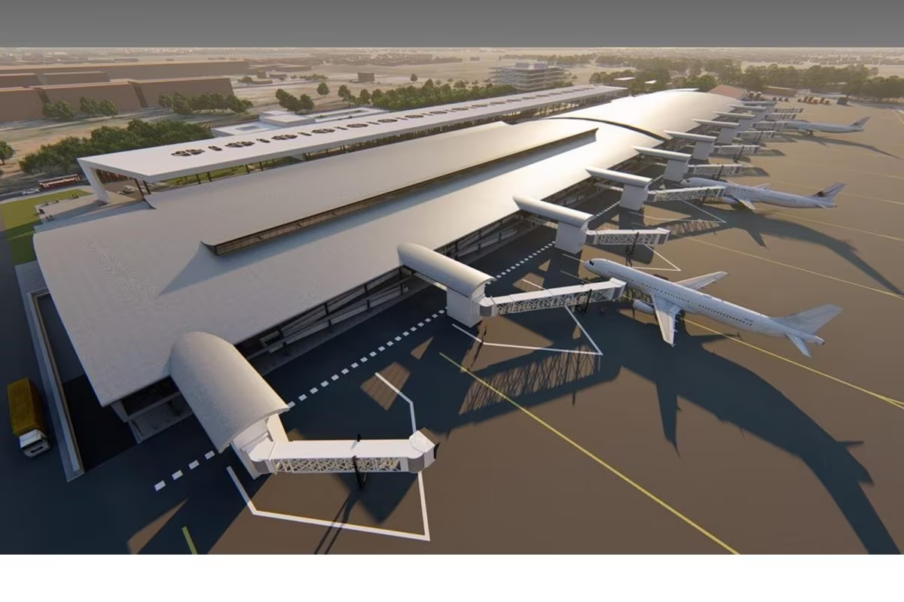
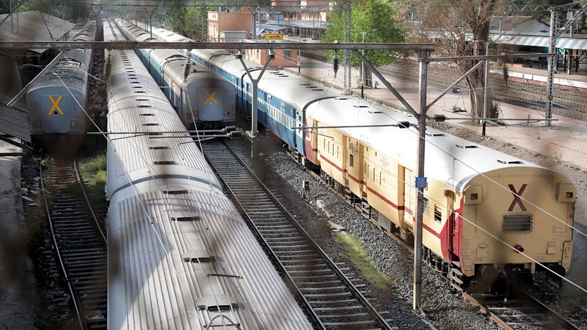
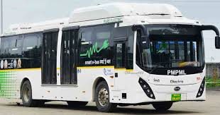

Public Transport in Pune

Air
Pune is served by Pune International Airport, offering both domestic and international flights.

Railway
The Pune Railway Station connects the city to various parts of India with several daily trains.

PMPL
Pune Mahanagar Parivahan Mahamandal Limited (PMPML) provides bus services across the city.

Metro
The Pune Metro is under construction and will enhance urban connectivity once completed.

Auto Rickshaw
Auto rickshaws are a convenient and affordable way to travel short distances within the city.